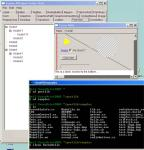

| The development of DotGNU Portable.NET is based in Australia, at Rhys Weatherley's company: Southern Storm Software, Pty Ltd. |
|
The standards documents for C# and the CLI can be freely downloaded from
the ECMA website. The
C# specification is
ECMA standard 334, and the specification for the CLI ("Command Language
Infrastructure") is
ECMA standard 335.
If you wish to contribute to the C# library, you will also need the
file Ecma-335-xml.zip.
Unpack this zip file and then use the "csdoc2html" program (which
you can find in the csdoc directory of the pnet package
of DotGNU Portable.NET)
DotGNU to convert the XML file into HTML, so that you can view its
contents more easily.
|
|
| The Neil Cawse Portable.net homepage has System.Windows.Forms screenshots, information about the DotGNU Coding competition, and "PNETLIB Visual Studio 1.1 Projects" downloads. |  |
| wx.NET is a C# wrapper for the wxWindows cross-platform GUI framework. |

|
| Qt# is a C# wrapper for the Qt GUI toolkit, on which the KDE desktop environment for GNU/Linux is based. Qt# developer Adam Treat (irc nick: manyoso) is often on the #dotgnu irc channel. |

|
| Pocket C# is a port of the DotGNU project's C# compiler to Windows CE. |
Verbatim copying and distribution of this entire article are permitted in any medium or format, provided this notice is preserved.
This page is maintained by Norbert Bollow <nb@SoftwareEconomics.biz> with support from the DotGNU Developers mailing list.